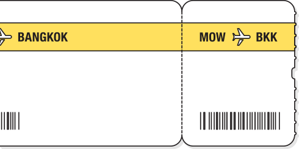

Максим хочет увидеть настоящий, нетуристический Таиланд.
Он планирует путешествовать по стране самостоятельно, составлять маршрут по ходу. Поэтому всё, что ему нужно, — билет на самолёт.
По запросу "билеты в Тай" Макс видит интерактивный ответ агрегатора авиабилетов. Он дозаполняет форм прямо на Яндексе и на сайте сразу попадает в просмотр результатов.